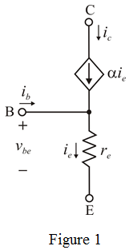
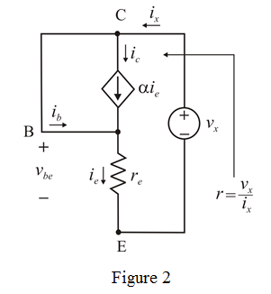

Draw the current controlled representation of a BJT.

Refer to the Figure P6.98 in the text book.
The base and collector of transistor is short circuited, voltage implies the transistor is operating in the active mode.
Draw the modified circuit diagram of Figure 1.

Write the expression of small signal resistance.
Apply Kirchhoff’s current law at node C.
…… (1)
Apply Kirchhoff’s current law at node B.
…… (2)
Equate equation (1) and (2).
Apply Kirchhoff’s voltage in Figure 2.
Therefore, the small-signal resistance is proved.